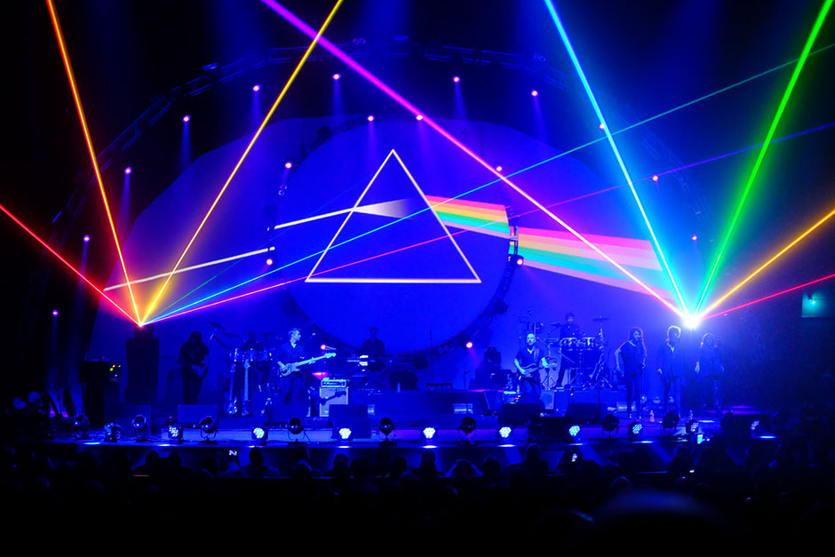
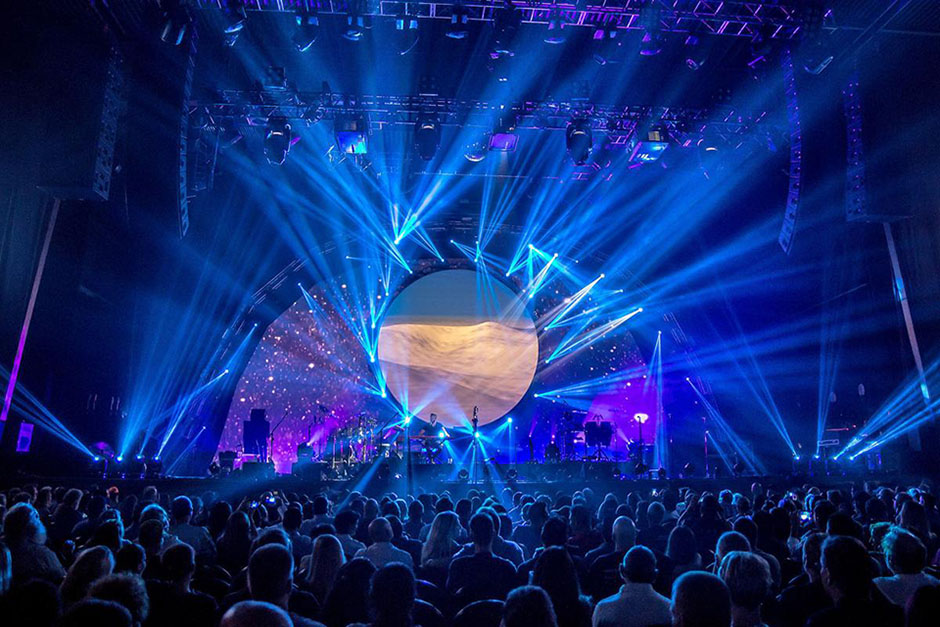
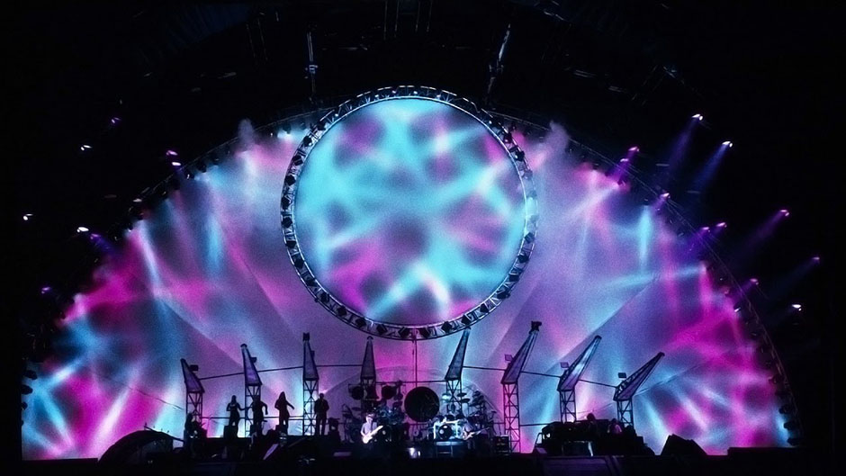
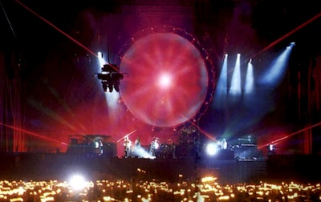
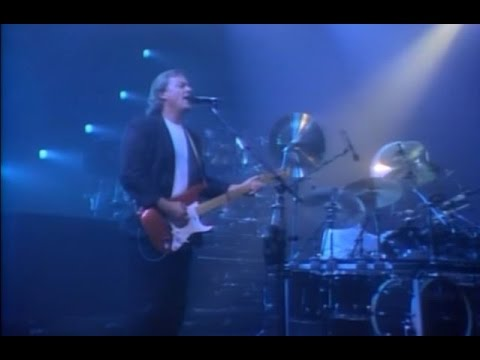
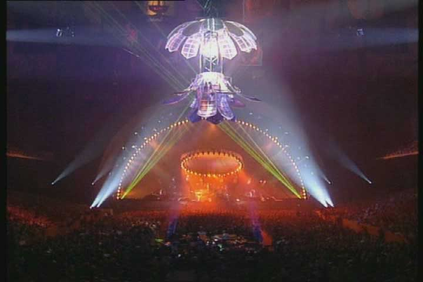

I concerti dei Pink Floyd
I fondatori del Light Show
Nelle esibizioni dal vivo i Pink Floyd hanno proposto, fin dagli inizi, un'esperienza sia visiva che musicale innovativa, diventata un punto di riferimento per le epoche successive. In Inghilterra essi sono i primi a realizzare, con l'aiuto di Mike Leonard, quello che viene definito light show: in questo tipo di spettacolo i musicisti sono una figura secondaria nella coreografia dell'esibizione, che vede come protagonisti luci, laser, fumi, fuochi d'artificio ed effetti speciali di vario genere. Sono inoltre tra i primi gruppi musicali a portare in tour, oltre agli innovativi sistemi di diffusione sonora quadrifonici, un impianto luci proprio, che negli anni si è espanso sempre più, raggiungendo dimensioni impressionanti.
Caratteristica peculiare delle esibizioni floydiane sono grandi palloni gonfiabili rappresentanti diversi oggetti: nei concerti americani del 1975 del tour di The Dark Side of the Moon c'è un dirigibile a forma di piramide, nel tour di Animals il protagonista è invece il Pink Floyd pig. Nei concerti di The Wall, a metà dello spettacolo, viene edificato in breve tempo un muro di cartapesta alto 12 metri che separa i musicisti dal pubblico, e che permane per tutta la seconda parte del concerto, per poi crollare nel finale.
L'apice della maestosità dell'allestimento, tuttavia, viene raggiunta nel The Division Bell tour del 1994, immortalato dal filmato Pulse, nel quale si osserva il palco circondato da alte impalcature cariche di luci, fumi e laser. Marc Brickman, il designer del gruppo, utilizzò centinaia di lampade intelligenti, comandate da computer, che seguivano i brani in scaletta accompagnandoli, battuta per battuta, con giochi di luci sempre diversi. Dietro il palco vi era inoltre uno schermo circolare, sul quale venivano continuamente proiettate immagini, film e animazioni sincronizzate con i brani eseguiti.
La parte più elaborata e spettacolare di queste esibizioni sono però gli effetti speciali: alla fine della canzone On The Run, un aereo in scala 1:1, sostenuto da cavi, attraversa la platea e si schianta a lato del palco in una gigantesca esplosione di luci. Durante l'assolo di Comfortably Numb, invece, una sfera ricoperta di specchi, calata al centro dell'arena, viene illuminata da potenti fari, in modo da illuminare tutta la platea con il riflesso, mentre essa si apre fino a formare un fiore.
|  |  |
|  |  |

|
 |